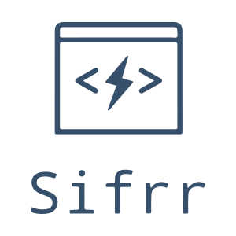

Sifrr



Documentation | Changelog | Contributors | Contributing guidelines | Code of Conduct
sifrr is a set of tiny, customizable, independent libraries for creating modern and fast webapps using JavaScript.
Repository Info
This repository is a monorepo managed using yarn workspaces. This means there are multiple packages managed in this codebase, even though they are published to NPM as separate packages. They will always have same latest version and are released together.
Note that for 0.x releases of this library, the API is not considered stable yet and may break between minor releases. After 1.0, Semantic Versioning will be followed.
Packages
Browser (VanillaJS)
| Package | Description | NPM | Documentation | Tests |
|---|---|---|---|---|
| sifrr-dom | Small Library to build UIs with custom elements |  |
OK | |
| sifrr-template | :zap: Fast HTML-JS Templating engine used in sifrr-dom |  |
OK | |
| sifrr-fetch | Wrapper library for Browser fetch API can be used in node too |  |
OK | |
| sifrr-route | Routing for sifrr-dom |  |
OK | |
| sifrr-serviceworker | Service worker wrapper library |  |
OK | |
| sifrr-storage | Browser persisted storage library (2kb alternate to localforage) |  |
OK |
sifrr-dom, sifrr-template, sifrr-fetch, sifrr-serviceworker, sifrr-storage can be used independently. sifrr-route is a sifrr-dom element, hence it should be used with sifrr-dom.
Server (NodeJS)
| Package | Description | NPM | Documentation | Tests |
|---|---|---|---|---|
| sifrr-ssr | Server side pre-rendering using puppeteer with caching |  |
OK | |
| sifrr-server | Fast HTTP + WebSockets server |  |
OK |
Usage
All the packages can be used with node, es6 modules, and are compatible with bundler of your choice (rollup, webpack, browserify)
commonJS (node)
const { Element } = require('@sifrr/dom');
ES6 modules (import)
import { Element } from '@sifrr/dom';
Browser distributions (browser packages only)
For eg.
<script src="https://unpkg.com/@sifrr/dom@{version}/dist/index.iife.js"></script>
// for v0.0.9
<script src="https://unpkg.com/@sifrr/dom@0.0.9/dist/index.iife.js"></script>
// this sets window.Sifrr.Dom as sifrr-dom, same for other packages
Packages that have tests have a working example of that package in test/public folder
Node support (server packages and development)
Sifrr officially supports node v20, v22 (LTS), v24. Other versions might work.
Browser Support (browser packages)
Sifrr browser packages officially supports these browser versions (for dist files):
| Browser | Version |
|---|---|
| Chrome | >= 55 |
| Android Chrome | >= 55 |
| Firefox | >= 63 |
| Android Firefox | >= 63 |
| Opera | >= 42 |
| Safari | >= 10.1 |
| Safari (iOS browsers) | >= 10.1 |
Individual libraries may support older versions too with polyfills listed in docs, or by bundling it with polyfills using babel etc.
Approximately amounts to ~90% of total worldwide browser usage.
To support mini browsers (opera mini, uc browser etc.), You can use sifrr-ssr to provide server side rendering.
Contributors
Code Contributors
This project exists thanks to all the people who contribute. [Contribute].

Financial Contributors
Become a financial contributor and help us sustain our community. [Contribute]
Individuals

Organizations
Support this project with your organization. Your logo will show up here with a link to your website. [Contribute]


License
Sifrr is MIT Licensed.

(c) @aadityataparia